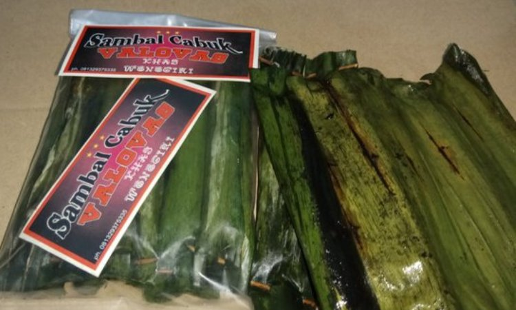

Secara Geografis, Kabupaten Wonogiri terletak pada posisi antara 7o32’ sampai 8o15’ Lintang Selatan (LS) serta antara 110o41’ sampai 111o18’ Bujur Timur (BT) dengan luas wilayah kurang lebih 182.236,02 Hektar atau 5,59% dari luas wilayah Provinsi Jawa Tengah dengan panjang garis pantai 7,6 km.
Posisi Kabupaten Wonogiri sangat strategis karena terletak di sebelah tenggara Provinsi Jawa Tengah dan diapit oleh Provinsi Jawa Timur dan Provinsi Daerah Istimewa Yogyakarta ( DIY ) yang memungkinkan berinteraksi dengan kedua provinsi tersebut. Terletak di 32 km di sebelah selatan Kota Solo, berbatasan dengan Provinsi Jawa Timur di sebelah timur dan Samudera Indonesia di sebelah barat.
Secara administrasi, wilayah Kabupaten Wonogiri mempunyai batas-batas wilayah sebagai berikut:
Sebelah Timur dengan Kabupaten Ponorogo, Kabupaten Magetan dan Kabupaten Pacitan yang ketiganya merupakan wilayah Provinsi Jawa Timur;
Sebelah Selatan dengan Samudera Indonesia;
Sebelah Barat dengan Provinsi Daerah Istimewa Yogyakarta ;
belah Utara dengan Kabupaten Karanganyar dan Kabupaten Sukoharjo.
Sejarah Wonogiri
SEJARAH SINGKAT KABUPATEN WONOGIRI
Sejarah terbentuknya Kabupaten Wonogiri tidak bisa terlepas dari perjalanan hidup dan perjuangan Raden Mas Said atau dikenal dengan julukan Pangeran Sambernyawa. Asal kata Wonogiri sendiri berasal dari bahasa Jawa wana (alas/hutan/sawah) dan giri (gunung/ pegunungan). Nama ini sangat tepat menggambarkan kondisi wilayah Kabupaten Wonogiri yang memang sebagian besar berupa sawah, hutan dan gunung.
Pemerintahan di Kabupaten Wonogiri awal mulanya merupakan suatu daerah basis perjuangan Raden Mas Said dalam menentang penjajahan Belanda. Raden Mas Said lahir di Kartasura pada hari Minggu Legi, tanggal 4 Ruwah 1650 tahun Jimakir, Windu Adi Wuku Wariagung, atau bertepatan dengan tanggal Masehi 8 April 1725. Raden Mas Said merupakan putra dari Kanjeng Pangeran Aryo Mangkunegoro dan Raden Ayu Wulan yang wafat saat melahirkannya.
Memasuki usia dua tahun, Raden Mas Said harus kehilangan ayahandanya karena dibuang oleh Belanda ke Tanah Kaap (Ceylon) atau Srilanka. Hal itu karena ulah keji berupa fitnah dari Kanjeng Ratu dan Patih Danurejo. Akibatnya, Raden Mas Said mengalami masa kecil yang jauh dari selayaknya seorang bangsawan Keraton. Raden Mas Said menghabiskan masa kecil bersama anak-anak para abdi dalem lainnya, sehingga mengerti betul bagaimana kehidupan kawula alit. Hikmah dibalik itulah yang menempa Raden Mas Said menjadi seorang yang mempunyai sifat peduli terhadap sesama dan kebersamaan yang tinggi karena kedekatan beliau dengan abdi dalem yang merupakan rakyat kecil biasa.
Pada suatu saat terjadi peristiwa yang membuat Raden Mas Said resah, karena di Keraton terjadi ketidakadilan yang dilakukan oleh Raja (Paku Buwono II) yang menempatkan Raden Mas Said hanya sebagai Gandhek Anom (Manteri Anom) atau sejajar dengan Abdi Dalem Manteri. Padahal sesuai dengan derajat dan kedudukan, Raden Mas Said seharusnya menjadi Pangeran Sentana.
Melihat hal ini, Raden Mas Said ingin mengadukan ketidakadilan kepada sang Raja, akan tetapi pada saat di Keraton oleh sang Patih Kartasura ditanggapi dingin. Dan dengan tidak berkata apa-apa sang Patih memberikan sekantong emas kepada Raden Mas Said. Perilaku sang Patih ini membuat Raden Mas Said malu dan sangat marah, karena beliau ingin menuntut keadilan bukan untuk mengemis.
Raden Mas Said bersama pamannya Ki Wiradiwangsa dan Raden Sutawijaya yang mengalami nasib yang sama, mengadakan perundingan untuk membicarakan ketidakadilan yang menimpa mereka. Akhirnya Raden Mas Said memutuskan untuk keluar dari keraton dan mengadakan perlawanan terhadap Raja.
Raden Mas Said bersama pengikutnya mulai mengembara mencari suatu daerah yang aman untuk kembali menyusun kekuatan. Raden Mas Said bersama para pengikutnya tiba disuatu daerah dan mulai menggelar pertemuan-pertemuan untuk menghimpun kembali kekuatan dan mendirikan sebuah pemerintahan biarpun masih sangat sederhana. Peristiwa itu terjadi pada hari Rabu Kliwon tanggal 3 Rabiulawal (Mulud) tahun Jumakir windu Sengoro, dengan candra sengkala Angrasa Retu Ngoyag Jagad atau tahun 1666 dalam kalender Jawa. Dan dalam perhitungan kalender Masehi bertepatan dengan hari Rabu Kliwon tanggal 19 Mei 1741 M.
Daerah yang dituju Raden Mas Said waktu itu adalah Dusun Nglaroh (wilayah Kecamatan Selogiri), dan disana Raden Mas Said menggunakan sebuah batu untuk menyusun strategi melawan ketidakadilan. Batu ini dikemudian hari dikenal sebagai Watu Gilang yang merupakan tempat awal mula perjuangan Raden Mas Said dalam melawan ketidakadilan dan segala bentuk penjajahan. Bersama dengan pengikut setianya, dibentuklah pasukan inti kemudian berkembang menjadi perwira-perwira perang yang mumpuni dengan sebutan Punggowo Baku Kawandoso Joyo. Dukungan dari rakyat Nglaroh kepada perjuangan Raden Mas Said juga sangat tinggi yang disesepuhi oleh Kyai Wiradiwangsa yang diangkat sebagai Patih. Dari situlah awal mula suatu bentuk pemerintahan yang nantinya menjadi cikal bakal Kabupaten Wonogiri.
Dalam mengendalikan perjuangannya, Raden Mas Said mengeluarkan semboyan yang sudah menjadi ikrar sehidup semati yang terkenal dengan sumpah “Kawulo Gusti” atau “Pamoring Kawulo Gusti” sebagai pengikat tali batin antara pemimpin dengan rakyatnya, luluh dalam kata dan perbuatan, maju dalam derap yang serasi bagaikan keluarga besar yang sulit dicerai-beraikan musuh. Ikrar tersebut berbunyi “Tiji tibeh, Mati Siji Mati Kabeh, Mukti Siji Mukti Kabeh”. Ini adalah konsep kebersamaan antara pimpinan dan rakyat yang dipimpin maupun sesama rakyat.
Raden Mas Said juga menciptakan suatu konsep manajemen pemerintahan yang dikenal sebagai Tri Darma yaitu :
Mulat Sarira Hangrasa Wani, artinya berani mati dalam pertempuran karena dalam pertempuran hanya ada dua pilihan hidup atau mati. Berani bertindak menghadapi cobaan dan tantangan meski dalam kenyataan berat untuk dilaksanakan. Sebaliknya, disaat menerima anugerah baik berupa harta benda atau anugerah lain, harus diterima dengan cara yang wajar. Hangrasa Wani, mau berbagi bahagia dengan orang lain.
Rumangsa Melu Handarbeni, artinya merasa ikut memiliki daerahnya, tertanam dalam sanubari yang terdalam, sehingga pada akhirnya pada akhirnya akan menimbulkan perasaan rela berjuang dan bekerja untuk daerahnya. Merawat dan melestarikan kekayaan yang terkandung didalamnya.
Wajib Melu Hangrungkebi, artinya dengan merasa ikut memiliki timbul kesadaran untuk berjuang hingga titik darah penghabisan untuk tanah kelahirannya.
Kegigihan Raden Mas Said dalam memerangi musuh-musuhnya sudah tidak diragukan lagi, bahkan hanya dengan prajurit yang jumlahnya sedikit, tidak akan gentar melawan musuh. Raden Mas Said merupakan panglima perang yang mumpuni, terbukti selama hidupnya sudah melakukan tidak kurang 250 kali pertempuran dengan tidak menderita kekalahan yang berarti. Dari sinilah Raden Mas Said mendapat julukan “Pangeran Sambernyawa” karena dianggap sebagai penebar maut (Penyambar Nyawa) bagi siapa saja musuhnya pada setiap pertempuran.
Berkat keuletan dan ketangguhan Raden Mas Said dalam taktik pertempuran dan bergerilya sehingga luas wilayah perjuangannya meluas meliputi Ponorogo, Madiun dan Rembang bahkan sampai daerah Yogyakarta. Pada akhirnya atas bujukan Sunan Paku Buwono III, Raden Mas Said bersedia diajak ke meja perundingan guna mengakhiri pertempuran.
Dalam perundingan yang melibatkan Sunan Paku Buwono III, Sultan Hamengkubuwono I dan pihak Kompeni Belanda, disepakati bahwa Raden Mas Said mendapat daerah kekuasaan dan diangkat sebagai Adipati Miji atau mandiri bergelar Kanjeng Gusti Pangeran Adipati Arya (KGPAA) Mangkunegoro I. Penetapan wilayah kekuasaan Raden Mas Said terjadi pada tanggal 17 Maret 1757 melalui sebuah perjanjian di daerah Salatiga. Kedudukannya sebagai Adipati Miji sejajar dengan kedudukan Sunan Paku Buwono III dan Sultan Hamengkubuwono I dengan daerah kekuasaan meliputi wilayah Keduwang (daerah Wonogiri bagian timur), Honggobayan (daerah timur laut Kota Wonogiri sampai perbatasan Jatipurno dan Jumapolo Kabupaten Karanganyar), Sembuyan (daerah sekitar Wuryantoro dan Baturetno), Matesih, dan Gunung Kidul.
KGPAA Mangkunegoro I membagi wilayah Kabupaten Wonogiri menjadi 5 (lima) daerah yang masing-masing memiliki ciri khas atau karakteristik yang digunakan sebagai metode dalam menyusun strategi kepemimpinan, yaitu :
Daerah Nglaroh (wilayah Wonogiri bagian utara, sekarang masuk wilayah kecamatan Selogiri). Sifat rakyat daerah ini adalah Bandol Ngrompol yang berarti kuat dari segi rohani dan jasmani, memiliki sifat bergerombol atau berkumpul. Karakteritik ini sangat positif dalam kaitannya untuk menggalang persatuan dan kesatuan. Rakyat di daerah Nglaroh juga bersifat pemberani, suka berkelahi, membuat keributan akan tetapi jika bisa memanfaatkan potensi rakyat Nglaroh bisa menjadi kekuatan dasar yang kuat untuk perjuangan.
Daerah Sembuyan (wilayah Wonogiri bagian selatan sekarang Baturetno dan Wuryantoro), mempunyai karakter sebagai Kutuk Kalung Kendho yang berarti bersifat penurut, mudah diperintah pimpinan atau mempunyai sifat paternalistik.
Daerah Wiroko (wilayah sepanjang Kali Wiroko atau bagian tenggara Kabupaten Wonogiri sekarang masuk wilayah Kecamatan Tirtomoyo). Masyarakat didaerah ini mempunyai karakter sebagai Kethek Saranggon, mempunyai kemiripan seperti sifat kera yang suka hidup bergerombol, sulit diatur, mudah tersinggung dan kurang memperhatikan tata krama sopan santun. Jika didekati mereka kadang kurang mau menghargai orang lain, tetapi jika dijauhi mereka akan sakit hati. Istilahnya gampang-gampang susah.
Daerah Keduwang (wilayah Wonogiri bagian timur) masyarakatnya mempunyai karakter sebagai Lemah Bang Gineblegan. Sifat ini bagai tanah liat yang bisa padat dan dapat dibentuk jika ditepuk-tepuk. Masyarakat daerah ini suka berfoya-foya, boros dan sulit untuk melaksanakan perintah. Akan tetapi bagi seorang pemimpin yang tahu dan paham karakter sifat dan karakteristik mereka, ibarat mampu menepuk-nepuk layaknya sifat tanah liat, maka mereka akan mudah diarahkan ke hal yang bermanfaat.
Daerah Honggobayan (daerah timur laut Kota Wonogiri sampai perbatasan Jatipurno dan Jumapolo Kabupaten Karanganyar) mempunyai karakter seperti Asu Galak Ora Nyathek. Karakteristik masyarakat disini diibaratkan anjing buas yang suka menggonggong akan tetapi tidak suka menggigit. Sepintas dilihat dari tutur kata dan bahasanya, masyarakat Honggobayan memang kasar dan keras menampakkan sifat sombong dan congkak serta tinggi hati, dan yang terkesan adalah sifat kasar menakutkan. Akan tetapi mereka sebenarnya baik hati, perintah pimpinan akan dikerjakan dengan penuh tanggungjawab.
Dengan memahami karakter daerah-daerah tersebut, Raden Mas Said menerapkan cara yang berbeda dalam memerintah dan mengendalikan rakyat diwilayah kekuasaannya, menggali potensi yang maksimal demi kemajuan dalam membangun wilayah tersebut. Raden Mas Said memerintah selama kurang lebih 40 tahun dan wafat pada tanggal 28 Desember 1795.
Hari Jadi Kabupaten Wonogiri
Dengan mengambil momentum tanggal 19 Mei 1741 M, ketika Raden Mas Said membentuk sebuah awal pemerintahan di Nglaroh yang juga dianggap sebagai cikal bakal Kabupaten Wonogiri, maka Pemerintah Kabupaten Wonogiri menetapkan Peraturan Daerah Nomor 5 Tahun 1990 tentang Hari Jadi Kabupaten Daerah Tingkat II Wonogiri. Hari Jadi suatu daerah pada hakekatnya adalah merupakan awal perjalanan sejarah dan titik tolak untuk menatap masa depan dengan pembangunan secara sistematis dan berkesinambungan.
Tahun 1741 dilambangkan dengan surya sengkala Kahutaman Sumbering Giri Linuwih. Arti kata yang terkandung didalamnya adalah Kahutaman : keberanian; Sumbering : sumber kekuatan; Giri : Gunung/Wonogiri; dan Linuwih : tertinggi. Sehingga jika digabungkan mengandung maksud filosofis yaitu : Dengan keberanian atas dasar keluhuran budi, tekad dan semangat, segala tujuan luhur akan tercapai.
Hari Jadi Kabupaten Wonogiri merupakan salah satu jati diri daerah yang perlu dihormati, dilestarikan dan diperingati oleh segenap jajaran Pemerintah Daerah dan seluruh lapisan masyarakat dengan menumbuhkan semangat juang, patriotisme, kesatuan bangsa, kemandirian, suri tauladan dan nilai budaya luhur para leluhur bagi generasi muda untuk mencapai cita-cita bangsa. Setiap tanggal 19 Mei di Kabupaten Wonogiri digelar serangkaian upacara dan kegiatan dalam rangka memeriahkan peringatan Hari Jadi, dan sekaligus sebagai sarana mempromosikan potensi wisata budaya yang ada di Kabupaten Wonogiri.
Sekarang Kabupaten Wonogiri sudah menjadi sebuah Kabupaten yang memiliki berbagai keunggulan diberbagai bidang berkat kerja keras, keuletan, kemandirian dan semangat pantang menyerah seluruh rakyat dan semua komponen di Kabupaten Wonogiri dalam pembangunan. Kesadaran rakyat Wonogiri sangat tinggi dalam berpartisipasi untuk membangun daerah yang dulunya tandus menjadi daerah yang potensial dibidang ekonomi, sosial kebudayaan pariwisata, dan olahraga.
Bupati Wonogiri
Sebelum masa kemerdekaan :
1.
Kanjeng Raden Mas Tumenggung Warso Adiningrat
2.
Mas Tumenggung Warsodingrat
3.
Raden Ngabei Joyowirono
4.
Kanjeng Raden Tumenggung Harjowiratmo
Setelah masa kemerdekaan :
Seiring dengan peristiwa kemerdekaan, Republik Indonesia tanggal 17 Agustus 1945 sampai tahun 1946 di wilayah Mangkunegaran terjadi dualisme pemerintahan, yaitu Kabupaten Wonogiri masih dalam wilayah monarki Praja Mangkunegaran dan di lain pihak menginginkan Kabupaten Wonogiri masuk dalam sistem demokrasi Republik Indonesia. Timbulah gerakan Anti Swapraja yang menginginkan Wonogiri keluar dari sistem kerajaan Mangkunegaran. Akhirnya disepakati bahwa Kabupaten Wonogiri tidak menghendaki kembalinya Swapraja Mangkunegaran.
Sejak saat itu Kabupaten Wonogiri mempunyai status seperti sekarang, dan masuk sebagai Kabupaten yang berada diwilayah Provinsi Jawa Tengah.
Nama Bupati Wonogiri setelah masa kemerdekaan :
1.
SOETOJO HARDJO REKSONO ( 1946-1948 )
2.
R. DANOEPRANOTO ( 1948-1950 )
3.
R. AGUS MIFTAH DANOEKOESOEMO ( 1950-1953 )
4.
SENTOT WONGSO ADMOJO ( 1953-1956 )
5.
R. SOETARKO ( 1956-1957 )
6.
POERWO PRANOTO ( 1958 )
7.
R. YAKOP DANOE ADMOJO ( 1958-1959 )
8.
RM. Ng. BROTO PRANOTO ( 1960-1966 )
9.
R. SAMINO ( 1967-1974 )
10.
KRMH. SOEMOHARMOYO ( 1974-1979 )
11.
DRS. AGOES SOEMADI ( 1979-1980)
12.
R. SOEDIHARTO ( 1980-1985 )
13.
DRS. OEMARSONO ( 1985-1995 )
14.
Drs. TJUK SUSILO ( 1995-2000 )
15.
H. BEGUG POERNOMOSIDI ( 2000-2010 )
16.
H. DANAR RAHMANTO ( 2010 – 2015)
17.
JOKO SUTOPO (2016 - sekarang)
Oleh-Oleh khas Wonogiri
Sambal Cabuk Wijen

Ketika mendengar nama sambal mungkin yang terlintas di pikiran Anda ialah tampilan cabai yang dipadukan dengan bumbu rempah lainnya. Namun hal demikian berbeda dengan Sambal Cabuk Wijen khas Wonogiri ini. Secara visual, penganan ini tampak seperti Pepes yang dibungkus dengan daun pisang. Di atasnya terdapat sisa proses pembakaran daun.
Untuk cita rasa Sambal Cabuk Wijen sendiri sangatlah unik. Rasanya cenderung pedas, legit, dan warnanya sedikit gelap dari sambal biasanya. Jika dihidangkan dengan sepiring nasi hangat, Sambal Cabuk Wijen ini akan terasa begitu nagih dan nikmat. Tak heran ada banyak sekali wisatawan yang memburu penganan ini untuk dijadikan sebagai oleh oleh. Sesuai namanya, kuliner yang satu ini terbuat dari ampas pengolahan minyak wijen. Ampas minyak wijen tersebut kemudian dicampur dengan sekam atau kulit padi yang sudah dibakar sebelumnya. Lalu, campuran tersebut akan dibumbui dan dibungkus dengan daun pisang. Untuk Sambal Cabuk Wijen ini dibanderol sekitar Rp 5 ribuan saja.
Geti Biji Wijen
Bagi Anda pencinta makanan manis yang berbahan dasar wijen, penganan khas Wonogiri bisa dimasukkan ke dalam list oleh oleh. Pada dasarnya, camilan ini dibuat dengan mencampurkan biji wijen, gula Jawa, dan jahe. Perpaduan antara bahan tersebut merupakan kombinasi sempurna jika dinikmati ketika musim hujan menerpa.
Rasanya yang gurih dan sedikit pedas, membuat penganan yang satu ini banyak diburu oleh wisatawan lokal maupun luar daerah. Bagi Anda yang tertarik untuk mencicipi atau membawa pulang Geti Biji Wijen, hanya perlu mengeluarkan budget sekitar Rp 5 ribuan per bungkusnya. Tak perlu takut basi, jajanan yang satu ini dapat bertahan selama 1 bulan.
Tiwul Wonogiri
Bagi Anda penikmat jajanan tempo dulu, tentu tidak asing ketika mendengar nama Tiwul bukan? Penganan satu ini bisa pula Anda temukan di Wonogiri yang memiliki rasa lebih khas dari Tiwul pada umumnya. Seperti yang Anda tahu, Tiwul merupakan makanan yang terbuat dari singkong yang dikeringkan dan ditumbuk halus hingga berbentuk seperti nasi.
Kemudian, Tiwul akan ditambahi dengan irisan gula Jawa dan parutan kelapa yang begitu nikmat. Kuliner khas Wonogiri ini bisa dijadikan sebagai oleh oleh karena dapat bertahan dalam waktu yang lama. Dengan demikian, Anda tidak perlu khawatir jika oleh oleh yang dibawa basi. Harganya pun sangat terjangkau yakni sekitar Rp. 5 ribu per bungkusnya.
Brem Wonogiri
eruntuk Anda yang gemar mengonsumsi jajanan Brem, ada baiknya untuk mencicipi Brem khas Wonogiri. Terdapat perbedaan besar antara Brem Wonogiri dengan Brem pada umumnya. Jika biasanya Brem berbentuk kotak dan rasanya sedikit masam, Brem Wonogiri berbentuk bulat dan rasanya lebih manis. Begitu masuk ke dalam mulut, Brem akan langsung meleleh.
Jika berbicara mengenai jajanan Brem, penganan yang satu ini sebenarnya bisa ditemui di berbagai daerah Indonesia. Tetapi, selagi menginjakkan kaki di tanah Wonogiri sayang rasanya jika belum mencicipi Brem khas daerah tersebut. Anda juga bisa menjadikan makanan yang satu ini sebagai oleh oleh khas Wonogiri yang paling nikmat.
Wader Goreng Wonogiri
Pertama kalinya, Wader goreng dijadikan sebagai oleh oleh pada tahun 1982. Kala itu, Wader hanya dapat ditemukan di daerah sekitar Waduk Gajah Mungkur, Wonogiri. Seiring dengan berjalannya waktu, ikan tersebut kemudian dijadikan sebagai oleh oleh khas Wonogiri.
Sesuai dengan namanya, penganan ini terbuat dari Ikan Wader yang dibumbui dan diberi tepung yang kemudian di goreng garing. Kuliner olahan ikan ini sangat nikmat jika disantap langsung ataupun disajikan bersama nasi hangat. Teruntuk Anda yang ingin mencoba Wader goreng ini, bisa mendapatkannya di toko oleh oleh yang dibanderol sekitar Rp 7 ribu – Rp 10 ribuan saja.
Kacang Mede Khas Wonogiri
Mede merupakan salah satu jenis kacang kacangan yang memiliki beragam manfaat bagi tubuh. Sayangnya Kacang Mede memiliki nilai jual yang cukup tinggi. Biasanya, kacang ini banyak ditemukan saat hari raya atau acara pernikahan. Namun, Anda tetap bisa menikmati gurihnya Kacang Mede dengan membelinya di Kabupaten Wonogiri.
Bagi Anda yang belum tahu, Kacang Mede terbuat dari biji jambu mede yang telah diolah sedemikian rupa. Rasanya sangat gurih dan kaya sehingga membuat siapapun pencicipnya merasa ketagihan. Sebagai daerah yang memiliki lahan jambu mede seluas 20.000 hektar, Wonogiri memanfaatkannya untuk dijadikan sebagai bahan pangan bernilai jual tinggi.
Emping Melinjo
Sebagian dari Anda tentu sudah tak asing dengan makanan bernama Emping Melinjo. Saat terlintas dipikiran, Emping dikonotasikan sebagai camilan yang memiliki rasa pahit khas. Sejak jaman dahulu, biji melinjo sudah digunakan untuk bahan dasar pembuatan keripik. Mula mula, biji melinjo akan dipipihkan dan dijemur hingga benar benar kering.
Setelah dijemur, biji melinjo yang sudah pipih kemudian bisa digoreng dan berubah bentuk menjadi keripik melinjo. Dewasa ini, para produsen keripik melinjo telah berinovasi dengan menambahkan berbagai rasa ke dalam keripik. Ada yang rasa manis, pedas, hingga asin. Karena inovasi tersebut, penganan ini mulai banyak diburu wisatawan.
Roti Gaplek
Satu lagi kudapan khas Wonogiri yang bisa dijadikan sebagai oleh oleh, yakni Roti Gaplek. Gaplek merupakan nama lain dari ketela pohon yang menjadi bahan utama pembuatan roti khas Wonogiri ini. Ada banyak sekali varian rasa Roti Gaplek yang patut Anda coba. Mulai dari cokelat, kayu manis, cokelat jahe, dan masih banyak lagi.
Wonogiri tak hanya terkenal dengan wisata alamnya yang begitu memukau. Sajian kulinernya juga sangat menarik dan patut dicoba. Selagi menapakkan kaki di Wonogiri, sempatkanlah untuk berburu oleh oleh yang telah dirangkum dalam ulasan tersebut. Jangan lupa untuk membagi buah tangan khas Wonogiri kepada orang orang tercinta!
Kaos Singsot
Beralih ke oleh oleh berupa barang, Wonogiri juga menawarkan kaos oblong berkualitas yang menjadi saingan Bali dan Jogja. Kaos oblong tersebut dinamakan sebagai kaos Singsot. Pemilihan bahan yang berkualitas dan desainnya yang beragam membuat kaos ini banyak diburu para wisatawan. Tak jarang dari mereka yang memborong kaos Singsot untuk dibagikan ke kerabatnya.
Desainnya yang fashionable membuat buah tangan ini kian digemari oleh berbagai kalangan. Untuk bisa mendapatkan Kaos Singsot, Anda hanya perlu merogoh kocek sekitar Rp 60 ribu per satu buah kaos. Tetapi, jika Anda membelinya secara grosir akan mendapatkan harga yang jauh lebih terjangkau.
Aneka Souvenir Wonogiri
Teruntuk Anda yang sedang mencari cinderamata murah dan berjumlah banyak, maka bisa membeli souvenir khas Wonogiri. Ada banyak sekali kerajinan yang terbuat dari kayu, akar, hingga batu. Salah satu kerajinan yang paling banyak diburu ialah souvenir yang terbuat dari akar wangi. Bentuknya pun beragam mulai dari kapal, pesawat, bentuk candi, gantungan kunci, dll.
Kebudayaan khas wonogiri
Sebutan bagi Wonogiri yaitu kota Gaplek, yang kaya potensi alam seperti pantai, hutan, goa, untuk dijadikan tujuan wisata. Selain itu, salah satu wilayah Indonesia ini, juga memiliki keanekaragaman budaya dan adat istiadat yang akan diulas. Langsung saja kita berkenalan dengan kebudayaan salah satu kota di Indonesia ini, berikut ulasannya.
Tari Kethek Ogleng
Tari tradisional yang termasuk kesenian khas Wonogiri yang menampilkan gerak lucu kera putih yang diiringi musik gamelan riang menghentak. Tarian ini telah menjadi ikon atraksi budaya dan pariwisata. Dalam bahasa Jawa kethek berarti kera, sementara ogleng yaitu bunyi saron demung.
Bagi masyarakat Wonogiri, kethek ogleng berfungsi sebagai kesenian rakyat pasca panen, hiburan ketika pesta hajatan atau khitanan, dan lainnya.
Kebudayaan Khas Wonogiri, Karawitan
Karawitan merupakan salah satu kesenian yang terkenal di Pulau Jawa, salah satunya di Wonogiri. Jadi, kesenian ini merupakan seni gamelan dan suara dengan tangga nada slendro dan pelog.
Karawitan berasal dari kata rawit dalam bahasa Jawa, yang artinya halus dan lembut. Maka, karawitan dapat dimaknai sebagai kelembutan perasaan yang terkandung pada seni gamelan.
Kesenian ini terbagi menjadi tiga yaitu karawitan sekar, karawitan gending dan karawitan sekar gending.
Rumah Adat Limasan
Bangunan ini termasuk rumah adat Wonogiri yang dapat ditemukan di Jawa Tengah, namanya mengacu pada atap yang berbentuk limas. Rumah ini terdiri dari empat sisi dan sekilas mempunyai kemiripan dengan rumah adat Sumatera Selatan.
Namun, rumah adat ini terdiri dari beberapa macam, seperti Lawakan, Klabang Nyander, Gajah Mungkur, dan Semar Pinondhong. Biasanya, bangunan ini berasal dari material bata yang kokoh, dan keunikannya yaitu tidak dicat, tetapi tetap terlihat indah.
Ewuh Grubyukan
Tradisi ewuh grubyukan merupakan adat pernikahan Wonogiri yang menjadi tahapan upacara pernikahan bagi masyarakat Dharmasraya. Jadi, kegiatan dari adat ini yaitu mengiringi pengantin pria ke tempat pengantin wanita, bersama sebuah rombongan.
Masing-masing orang dari rombongan tersebut membawa uang, karena itu merupakan syarat grubyukan. Fungsi dari pelaksanaan tradisi ini yaitu membantu dana pesta pernikahan, serta tempat bertemunya muda-mudi antar masyarakat.
Gebyar Gajah Mungkur
Event terbesar pariwisata yang diselenggarakan di Taman Rekreasi Sendang Asri Waduk Gajah Mungkur. Agenda ini dilaksanakan setiap tahun, dalam rangka memeriahkan hari raya Idul Fitri.
Pelaksanannya kurang lebih selama dua pekan, dengan mementaskan kesenian seperti orkes Melayu, parade band, campursari, dan atraksi lainnya.
Kebudayaan Khas Wonogiri, Susuk Wangan
Kegiatan ini merupakan upacara adat Wonogiri bagi masyarakat Desa Setren Kecamatan Slogohimo. Upacara ini merupakan ungkapan rasa syukur ke Sang Khalik atas rezeki kehidupan lewat bumi pertiwi dan air untuk warga.
Warga mensyukuri tanah yang subur dan air melimpah, sehingga lahan pertanian subur. Hal itu menjadikan hasil bumi serta bahan makanan melimpah, sehingga warga tidak kelaparan dan terhindar dari penyakit.
Tradisi yang dilaksanakan setiap bulan Dzulhijjah, dan prosesinya digelar di objek wisata air terjun Girimanik Desa Setren Slogohimo. Dengan membersihkan saluran air dan kenduri.
Ruwatan Massal
Kultur masyarakat Jawa menganggap adanya aura buruk yang dapat menghampiri tubuh manusia, yang bisa disebabkan kelalaian manusia dan lainnya. Masyarakat melakukan prosesi pembersihan aura buruk ini dengan menggelar ruwatan.
Ruwatan merupakan sarana pagelaran wayang kulit, yang lakonnya Murwakala, serta dituturkan dalang pengruwat. Pelaksanaan adat ini bersamaan dengan prosesi Jamasan Pusaka Mangkunegaran I bertempat objek wisata Sendang Asri Waduk Gajah Mungkur.
Jamasan Pusaka Mangkunegaran
Event ini dilaksanakan pada bulan Muharram setiap tahunnya, sebagai penghormatan kepada Kanjeng Pangeran Adipati Arya Mangkunegoro I. Beliau adalah pendiri awal dalam pemerintahan Kabupaten Wonogiri, dan memiliki peninggalan pusaka yang dipakai untuk mengusir penjajah.
Jamasan Pusaka adalah proses pembersihan serta perawatan pusaka Mangkunegaran, dan pusaka lainnya. Setelah dibersihkan, maka pusaka dikembalikan ke tempat penyimpanan.
Selain Keanekaragaman Budaya, Ada juga Kuliner khas. Bukan hanya terkenal dengan objek wisata, dan kebudayaan, kabupaten ini juga mempunyai hidangan khas yaitu nasi tiwul.
Kuliner ini adalah makanan pengganti nasi, yang dibuat dari ketela pohon atau singkong. Makanan khas lainnya yaitu bakso dan mie ayam. Sering kali Anda melihat tukang bakso atau mie ayam yang mencantumkan nama Wonogiri.
Wonogiri merupakan salah satu wilayah di Indonesia yang memiliki ciri khas budaya tersendiri, seperti daerah lainnya. Bahkan, masyarakat daerah itu masih melestarikan kebudayaan peninggalan nenek moyangnya.
Daftar tempat wisata di Wonogiri
Watu Cenik
Wisata Watu Cenik adalah lokasi wisata di area perbukitan Kota Wonogiri. Tepatnya berada di Desa Sendang, Kecamatan Wonogiri, Kabupaten wonogiri, Jawa Tengah. Waktu tempuh untuk sampai ke Watu Cenik dari Kota Wonogiri kurang lebih sekitar 15 menit. Watu Cenik menyajikan pemandangan Waduk Gajah Mungkur yang tampak membentang luas dilihat dari ketinggian. Selain itu, pemandangan makin terlihat asri dengan adanya kawasan perbukitan Wonogiri yang masih dipenuhi hijau pepohonan.
Obyek wisata Waduk Gajah Mungkur
Obyek Wisata (OW) Waduk Gajah Mungkur juga masih berlokasi di sekitaran area Wonogiri Kota. Lokasi tepatnya berada di Desa Sendang, Wonogiri. Kompleks wisata OW Gajah Mungkur menawarkan beberapa aktivitas berwisata yang bisa dijajal oleh pengunjung. Di antaranya, pengunjung bisa berjalan-jalan di tepian waduk, naik perahu, menjajal berbagai arena permainan, atau melihat berbagai binatang yang ada di kebun binatangnya. Selain itu, pengunjung bisa juga berenang ataupun mencoba bermain wahana air di waterboomnya.
Waduk Pidekso
Waduk Pidekso merupakan waduk baru di Wonogiri yang diresmikan Presiden Joko Widodo (Jokowi) pada Selasa (28/12/2021). Bagi masyarakat yang ingin berkunjung ke Waduk Pidekso, waduk ini belum resmi dibuka. Namun jika hari libur tiba, area di sekitar waduk sudah ramai dengan pedagang makanan dan pengunjung yang menikmati pemandangan waduk dari bahu jalan. Waduk Pidekso berlokasi di Desa Pidekso, Kecamatan Giriwoyo, Kabupaten Wonogiri.
Kolam Renang Soko Langit
Jika ingin berenang bersama keluarga di Wonogiri, maka pemudik bisa menjajal berenang di Kolam Renang Soko Langit. Kolam renang ini berada di Desa Conto, Bulukerto, Wonogiri. Beberapa kelebihan Kolam Renang Soko Langit ini adalah keindahan pemandangan pegunungan yang ditawarkan. Selain itu, kolam renang berada di kawasan pedesaan, sehingga hawanya masih terasa sejuk dan menyegarkan. Jika berkunjung ke Soko Langit, pengunjung juga bisa sekalian mengunjungi Goa Resi yang lokasinya tak jauh dari kolam renang.
Air Terjun Muncar
Air Terjun Muncar berlokasi di Desa Bubakan, Girimarto, Wonogiri. Untuk datang kemari diperlukan waktu sekitar 50 menit dari Kota Wonogiri. Pemandangan yang masih asri dan air terjun yang masih alami adalah kelebihan yang ditawarkan dari lokasi wisata ini. Pastikan mengenakan pakaian yang nyaman saat datang kemari agar mudah beraktivitas, apalagi bagi Anda yang ingin menyusur hutan untuk mengunjungi air terjunnya. Tapi jika tidak ingin jalan jauh, maka pengunjung bisa bersantai-santai di tepian kolam yang berisi banyak ikan hias sembari kulineran.
Pantai Nampu
Pantai Nampu adalah salah satu pantai yang ada di daerah Wonogiri. Lokasi Pantai Nampu tepatnya berada di Desa Gunturharjo, Paranggupito, Wonogiri. Menuju Pantai Nampu, perjalanan dari Kota Wonogiri sampai ke pantai diperlukan waktu sekitar 2 jam. Pantai Nampu memiliki bibir pantai dengan pasir putih yang luas, cocok untuk menghabiskan waktu bersama keluarga. Pantai ini juga terhitung lebih sepi jika dibandingkan dengan pantai di daerah lain di sekitarnya seperti Gunungkidul maupun Pacitan.
Vidio Singkat
About Us
Irfan Nurjuliansyah
Email : Irfan.20010418@gmail.com
Selamat Datang di irfanweb.com!
irfanweb.com adalah situs web yang menyajikan berbagai macam informasi dan tempat-tempat wisata favorit dan populer di Pulau Jawa. Selain itu, irfanweb.com juga menyediakan informasi lainnya seperti tips berwisata, hotel murah dan sebagainya. Situs ini akan terus diupdate secara rutin disertai gambar-gambar menarik.
Dengan menggunakan situs ini berarti Anda setuju dengan kebijakan privasi kami yang dapat dibaca di Kebijakan Privasi.
Bila Anda memiliki pertanyaan, kritik, saran, atau masukan, Anda dapat menghubungi irfanweb.com di Halaman Kontak.
Kami harap irfanweb.com dapat membantu Anda dalam mendapatkan informasi wisata yang Anda cari dan dapat memberikan referensi dalam menikmati liburan yang Anda inginkan.